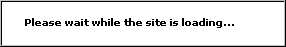

This page shows you how the relative positioning of windows works. Resize your browser to see the effect!
Click the following button to change the relative positioning behaviour of the grey window by changing the .Rel Property: